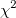
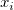

/math-fbcc679a0035f6fef5099eb0106f996d.png "\bar{x}_j") はｊグループのサンプル平均の行ベクトルで、
はｊグループのサンプル平均の行ベクトルで、/math-f898efd8ac64b6621a2aeed350ce3164.png "n_j\") はｊグループの観測された個数です。ｊグループのグループ内共分散行列は次のように表示されます。
はｊグループの観測された個数です。ｊグループのグループ内共分散行列は次のように表示されます。
内容 |
判別分析は観測値のグループ所属が分かっているものをさらにグループに振り分け、トレーニングデータとするために使われます。
をn個の観測値とp個の変数を持ったグループに所属しているトレーニングデータとします。はｊグループのサンプル平均の行ベクトルで、はｊグループの観測された個数です。ｊグループのグループ内共分散行列は次のように表示されます。
プールされたグループ内共分散行列は次のようになります。
/math-25624e90423e449a29d89e9cb2ef1335.png "S=\frac{1}{n-n_g}\cdot\sum_{j=1}^{n_g} (X_{t}-\bar{x}_j)^T(X_{t}-\bar{x}_j)")
欠損値はこのリスト形式で除かれています。つまり、欠損値を一つ以上含んでいる観測は分析から除外されています。
もしトレーニングデータが多変量正規分布になると仮定されているとき、次の尤度比検定統計Gを使い、グループ内共分散行列の均衡検定を行えます。
/math-4f141902b982a67990e391daacc238dd.png "G=C{(n-n_g) \mathrm{log} |S|-\sum_{j=1}^{n_g} (n_j-1) \mathrm{log} |S_j|}")
ここで
/math-7b51445c6fda672aa6cfd4a759c53f7d.png "C=1-\frac{2p^2+3p-1}{6(p+1)(n_g-1)}\cdot(\sum_{j=1}^{n_g} \frac{1}{n_j-1} -\frac{1}{n-n_g})")
大きいｎの値は、Gがおおよそ変数と自由度 で分散されていると考えられます。
正準判別分析はp値において、グループ間の分散がグループ内の分散と違いが最大になる割合の線形結合を探すのに使われます。作成された正準変量はグループ間の分離をするのに使われます。
トレーニングデータから総平均を引いたものをXとし、そのランクをkとします。直交行列QはQR分解(すべての列ランクを行う)またはXからのSVDで計算されます。そして はｋ列の最初のQになります。を /math-748eca54826a6c8ac743ce0e8d9de0da.png "n_g-1") によってnとし、直交行列によりグループを定義します。ｋｘ の行列Vを 次のようにします。
によってnとし、直交行列によりグループを定義します。ｋｘ の行列Vを 次のようにします。
The SVD of V is:
ゼロでない行列 の対角要素はiの正準係数で、正準変量とは /math-b1e513a36c4f9d05731ce051a387fc4e.png "\delta_i\") i=1,2,...,と で関係しています。
i=1,2,...,と で関係しています。
グループ内の二乗和行列における固有値は：
/math-ec58bf195d61ef078e1bc352e76becac.png "(n-1-n_g-\frac{1}{2}(k-n_g))\sum_{j=i+1}^{l} \mathrm{log}(1+\lambda_j)\ i=0,1,...,l-1")
マハラノビス距離は観測点とグループ間の距離を測ります。これには2種類の形があります。j 番目のグループと観測点  の距離は次のようになります。
事前確率は他のグループから観測データが集められた可能性のユーザ見解を反映します。Originは2種類の先験的確率をサポートしています。
/math-97ca54b52364dcc3af70b85c99b12763.png "\pi_j=n_j/n\") はトレーニングデータのｊ番目のグループ内にある観測データの数です。
はトレーニングデータのｊ番目のグループ内にある観測データの数です。観測データがj 番目のグループから出ている場合のp値は平均 と共分散行列 をもつ多変量正規分布に当てはまることを前提としています。観測点 がグループｊのから計測された確立は となるとき、グループｊに所属する事後確率は次のようになります。
と のパラメータはテストデータ から推測されています。すると観測点は最も事後確率が高いグループに入れられます。Originは事後確率を計算するのに2通りの計算方法を準備しています。
/math-97bb999f1c63118e1c15d0cd99f3ecd9.png "\mathrm{log}(q_j)=-\frac{1}{2}D_{ij}^2+\mathrm{log}(\pi_j)-\frac{1}{2}\mathrm{log}|S_j|+c_0")
は次のように正規化され、 は正規化したものから算出されます。
異型性インデックスは観測点がi番目の観測データよりもグループjにより典型的に当てはまる確立を示しています。すべてのグループで１に近い場合、それはトレーニングデータに入っているグループから来ていない可能性が高いことを意味しています。異型性インデックスは次のように計算されます。
はグループ内共分散行列が等しいもののベータ分布の下限破棄の可能性を示しています。
グループ内共分散行列が等しくないものに関しては次のようになります。
線形判別関数(またはフィッシャーの線形判別関数)は次のように計算されます。
トレーニングデータ内の観測データは事後確率によって分類されることができます。つまり事後確率が一番高いグループに入れられることになります。各グループからのマハラノビス距離の二乗と各グループからの異型性インデックスもそれぞれ計算されます。
トレーニングデータの分類結果は与えられたグループメンバーシップと予想されるグループの結果を比較した状態でまとめられています。分類失敗された観測データに事前確率で重み付けされた分類失敗エラー率はパーセンテージ(％)で計算されます。
はｊグループに分類失敗の観測点があるパーセントです。
トレーニングデータを分類すると同じ手順に従ってください。ただし、トレーニングデータ内で観測点の所属を明らかにするとき、グループ内共分散行列またはプールされたグループ内共分散行列を計算するときに除外されたデータは使用できません。
グループ内共分散行列とプールされたグループ内共分散行列はトレーニングデータから算出されます。テストデータ内の観測データは事後確率によって分類されることができます。つまり事後確率が一番高いグループに入れられることになります。